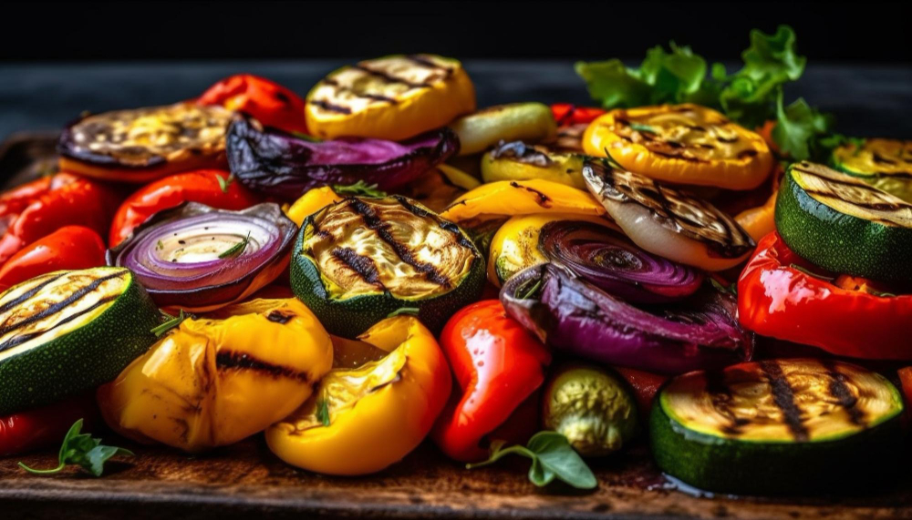

Home
Roasted Vegetables

designed by vecstock - Magnific.com
Ingredients
- 2 tablespoons olive oil, divided
- 1 large yam, peeled and cut into 1 inch pieces
- 1 large parsnip, peeled and cut into 1 inch pieces
- 1 cup baby carrots
- 1 zucchini, cut into 1 inch slices
- 1 bunch fresh asparagus, trimmed and cut into 1 inch pieces
- ½ cup roasted red peppers, cut into 1-inch pieces
- ¼ cup chopped fresh basil
- 2 cloves garlic, minced
- ½ teaspoon kosher salt
- ½ teaspoon ground black pepper
Other Recipes
Check out these other great recipes!